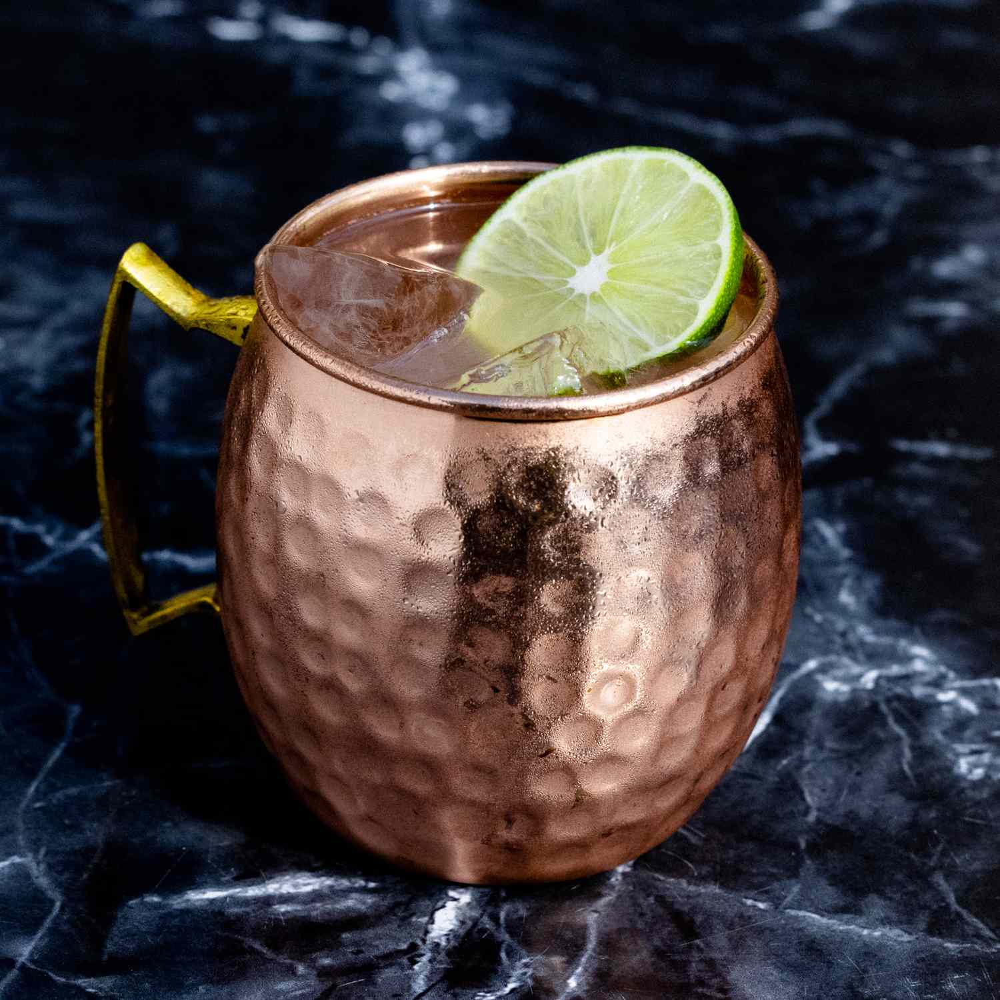

Cocktail Recipes
From classic to mordern, there's various types of drink to fit your mood and palate. Check out the drinks below and start making your own.
Moscow Mule
Ingredients
- 2 ounces vodka
- 1 ounce lime juice
- 1/3 ounce CBD-ginger syrup
- Ginger beer, to top
- Garnish: mint sprig
- Garnish: lime wedge
Steps
- Fill a chilled copper mug (or highball glass) with ice.
- Add vodka, lime juice and CBD-ginger syrup and stir briefly to combine.
- Top with ginger beer.
- Garnish with a mint sprig and a lime wedge.
Margarita
Ingredients
- 1 lime wedge
- 2 jalapeno coins, seeds removed
- 2 ounces blanco tequila
- 1/2 ounce orange liqueur
- 1 ounce lime juice, freshly squeezed
- 1/2 ounce agave syrup
- Garnish: salt rim
- Garnish: jalapeno coin
Steps
- Rub the rim of a rocks glass with a lime wedge, dip the rim in salt to coat, and set aside.
- Add the jalapeño coins to a shaker and gently muddle.
- Add the blanco tequila, orange liqueur, lime juice, and agave syrup, plus ice, and shake until well-chilled.
- Strain into the prepared glass over fresh ice.
- Garnish with a jalapeño coin.
Pina Colada
Ingredients
- 2 ounces light rum
- 1 1/2 ounces cream of coconut, like Coco López
- 1 ounce pineapple juice
- 1/2 ounce lime juice, freshly squeezed
- 1 cup pineapple chunks, frozen
- 1 cup ice
- Garnish: pineapple wedge
- Garnish: Maraschino cherry
- Garnish: Pineapple leaf (optional)
Steps
- Ahead of time, place pineapple chunks, fresh or removed from the can, in a container in the freezer for at least an hour, or longer.
- When ready to serve, combine all ingredients except garnish in a blender, making sure to shake the cream of coconut before adding. Puree until smooth, about 30 seconds.
- Pour into a hurricane glass, and garnish with pineapple wedge, maraschino cherry, and pineapple leaf (and/or miniature umbrella).
Petronio
Ingredients
- 1 1/2 ounces reposado tequila, like Tequila Altos Reposado
- 1/2 ounce viche
- 1/2 ounce vanilla liqueur
- 1 ounce lulo puree
- 1/2 ounce lemon juice, freshly squeezed
- 1/2 ounce orange juice, freshly squeezed
- Garnish: orange wheel
Steps
- Combine all ingredients except garnish in a cocktail shaker filled with ice.
- Shake for 20 seconds until well chilled.
- Strain into a rocks glass over fresh ice.
- Garnish with an orange wheel.
Mai Tai

Ingredients
- 1 1/2 ounces white rum
- 3/4 ounce orange curaçao
- 3/4 ounce lime juice, freshly squeezed
- 1/2 ounce orgeat
- 1/2 ounce dark rum
- Garnish: lime wheel
- Garnish: mint sprig
Steps
- Add the white rum, curaçao, lime juice and orgeat into a shaker with crushed ice and shake lightly (about 3 seconds).
- Pour into a double rocks glass.
- Float the dark rum over the top.
- Garnish with a lime wheel and mint sprig.
Zombie Rum

Ingredients
- 1 1/2 ounces Jamaican rum
- 1 1/2 ounces Puerto Rican gold rum
- 1 ounce 151-proof demerara rum
- 3/4 ounce lime juice, freshly squeezed
- 1/2 ounce Don’s mix (recipe below)
- 1/2 ounce falernum
- 1 teaspoon grenadine
- 4 dashes Pernod
- 1 dash Angostura bitters
- Garnish: mint sprig
Steps
- Add the Jamaica rum, Puerto Rican gold rum, demerara rum, Pernod, lime juice, Donn’s mix, falernum, grenadine and bitters into a blender, then add 6 ounces of crushed ice.
- Blend at high speed for no more than 5 seconds.
- Pour the contents into a tall glass or Tiki mug and add additional crushed ice to fill, if necessary.
- Garnish with a mint sprig.
Whiskey Sour
Ingredients
- 2 ounces bourbon
- 3/4 ounce lemon juice, freshly squeezed
- 1/2 ounce simple syrup
- 1/2 ounce egg white (optional)
- Garnish: Angostura bitters
Steps
- Add bourbon, lemon juice, simple syrup and egg white, if using, to a shaker, and dry-shake for 30 seconds without ice.
- Add ice and shake again for 15–20 seconds, until well-chilled.
- Strain into a rocks glass over fresh ice, or into a coupe without ice.
- Garnish with 3–4 drops of Angostura bitters.
Manhattan Transfer
Ingredients
- 1 1/2 ounces 100 proof rye whiskey
- 1/2 ounce dry vermouth
- 1/2 ounce Ramazzotti
- 1 dash orange bitters
- Garnish: orange twist
Steps
- Add all ingredients to a mixing glass filled with ice.
- Stir for 15–20 seconds, until well-chilled.
- Strain into a chilled coupe or Nick & Nora glass, and garnish with an orange twist, if desired.